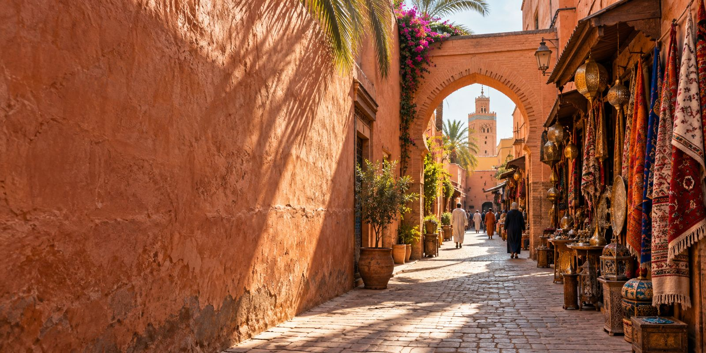

A bespoke experience in Marrakech.
A refined concierge service, opening the doors to Marrakech's hidden treasures since 1986.

Born from a family tradition.
Founded in 1986, our exclusive private concierge service is born from a family tradition of excellence.
For generations, we have opened the doors to Marrakech's hidden treasures, offering unparalleled expertise and personalisation.
Today, we continue to honour our heritage, crafting extraordinary experiences marked by sophistication and elegance.



True luxury is found in authenticity and exclusivity, crafting unforgettable moments for the most discerning travellers.
- Authenticity
- Exclusivity
- Expertise
- Personalisation
Hand in hand with artisans.
Guided by excellence, we work hand in hand with Marrakech's most esteemed artisans to unveil the city's rarest and most refined treasures.

“Thank you for this wonderful discovery of Morocco. We have gained a new respect for the country and its people. You have always been generous and professional.”
“Morocco remains an unforgettable memory. It was a wonderful trip, largely thanks to the generosity with which you helped us discover your country. Your wit and erudition made this trip unforgettable for all of us.”
“Our cup is overflowing with joy. Our hearts and souls have allowed us to enjoy the richest and most memorable vacation of our lives. We can't wait to return to Morocco one day.”
Four decades in Marrakech.
- 1986
Founded
A private concierge service, born from a family tradition.
- 1989
Koutoubia Gardens tour
Marrakech
- 1998
Menara Gardens tour
Marrakech
- 2002
Bahia Palace private tour
Marrakech
- 2023
US First Lady Jill Biden visits Madrasa Ben Youssef
Marrakech
Begin your story.
Tell us where you are coming from and when. A concierge replies within the hour.
Enquire now+212 6 00 00 00 00
concierge@aliyahprestige.ma